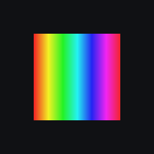

IL Tool
Untitled
Update
Export
Save
Load
Wavelength λ (nm)
λ (nm)
Working distance g (µm)
g (µm)
Grating width d
g
(µm)
d
g
(µm)
θ / φ₀
P
g
Diffraction Angle θ (°)
θ (°)
Initial Phase φ₀ (°)
φ₀ (°)
Grating Pitch P
g
(nm)
P
g
(nm)
Efficiency η
η
Azimuth α (°)
α (°)
Distance from Center r (µm)
r (µm)
θ (°)
Initial phase (°)
Grating pitch (nm)
Efficiency
Azimuth α (°)
Distance from center (µm)
Select
Add
Copy
Paste
Duplicate
Delete
Complex field
|Ẽ|²
Phase
[Re(Ẽ)]²
−
+
Run
0
|Ẽ|² (a.u.)
1
−π
Phase
π
IL Tool
© 2026 Nicolas Wyler
Export resolution